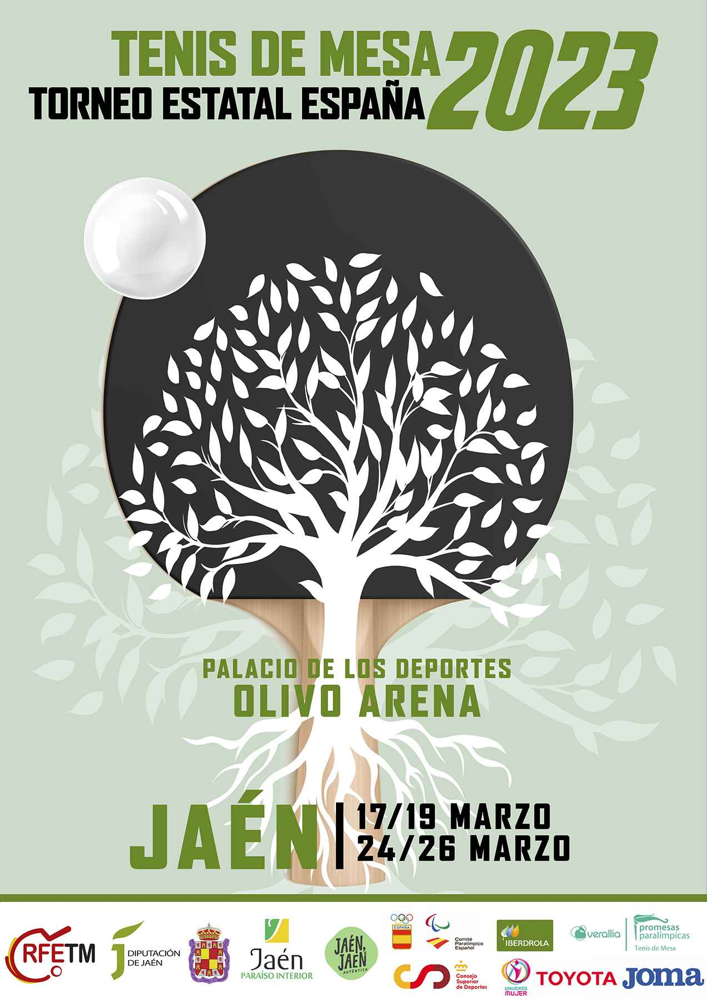
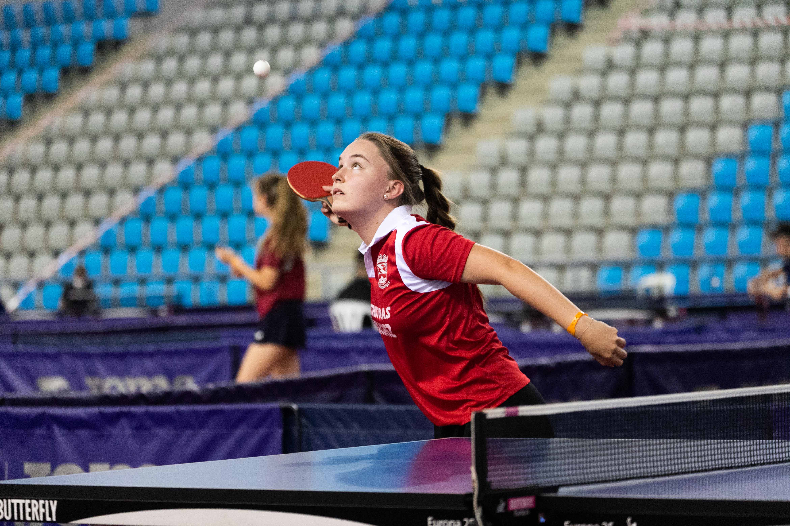
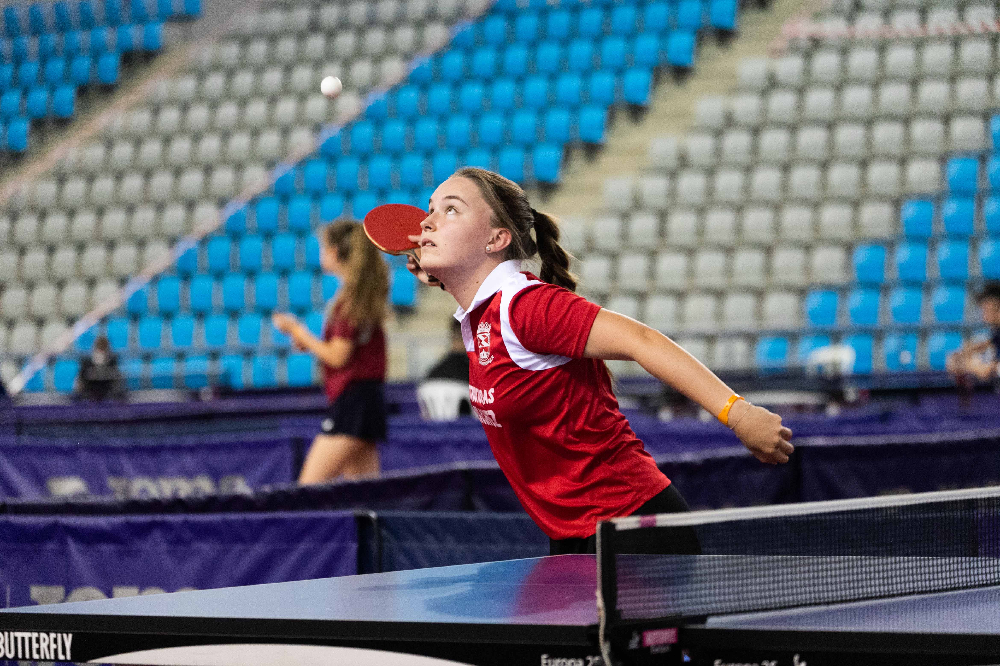

Tenis de mesa
El tenis de mesa es un deporte olímpico el cual llevo praticando desde los 8 años. Este deporte implica
un gran esfuerzo físico ya que se intercambia una gran cantidad de golpes a una velocidad elevada, con
distintos efectos y saques. El sistema de competición consiste en un partido al mejor de 5 sets
(es decir, ganará el primero que llegue a 3) y cada set consta de 11 puntos con diferencia de dos
puntos para otorgarse el set. Sacará dos veces cada jugador salvo cuando se llega a 10-10, donde sacará
una vez cada
uno.
Si queréis obtener más información sobre este deporte, están son sus normas.
En España hay cuatro torneos importantes a nivel nacional:

Este torneo es un torneo clasificatorio para el Torneo Estatal. Cada comunidad autónoma tiene un número de plazas determinadas para cada categoría que concederán el pase al Torneo Estatal.
El Torneo Estatal reúne a los 48 mejores jugadores de cada categoría. Consiste en una fase de grupos y dos de ellos pasan a la fase de eliminatoria, donde los 8 mejores pasarán al siguiente torneo.
El Top Estatal, que lo juegan los 8 mejores jugadores de cada categoría, siendo así el torneo más importante del año.

Por último, tenemos el Campeonato de España. A este torneo se puede presentar cualquier persona federada y consta de cuatro pruebas:
- Individual
- Por equipos
- Dobles femenino/masculino
- Dobles mixtos
 
